Real admin screens and controls for the five admin pages and eleven admin components in docs/design.md. Every reference is a screenshot taken from the live product, a public demo, or the vendor's own documentation.
Borrow: One small card on an empty dark page. The notice and the one action sit inside it. Our sign-in is a single "Sign in with Google" button, so a card this small is all it needs.
Fit: P1 agrees: one filled Login button. P7 agrees: no chrome around the card.
Borrow: Two fields on an empty dark page, with Sign-In and Cancel as quiet text links underneath and nothing else. As plain as a sign-in can get; ours is plainer still (one Google button).
Fit: P7 agrees. P1 neutral: both actions are plain text, so no button looks primary.
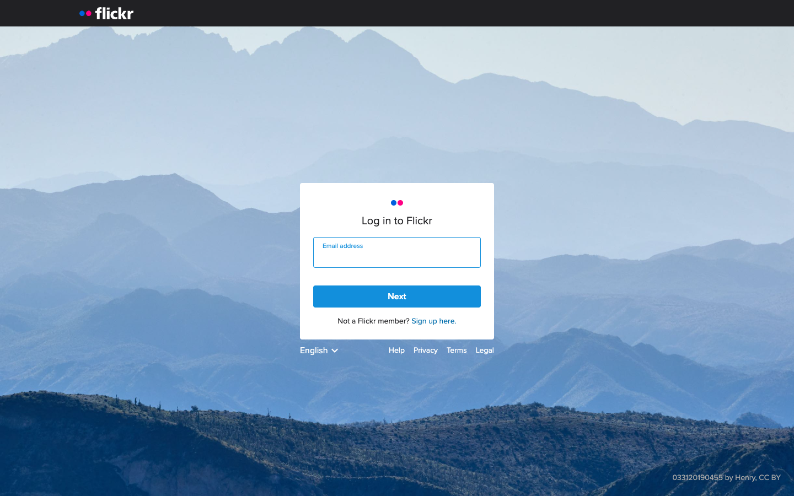
Sign-in: card over a full-bleed photo
Flickr · source · public · Taken: 2026-10-29 · PG-signin
Borrow: A small card sits over one large photograph. A photo site can use its own cover image behind the sign-in card, which costs nothing because the image already exists.
Fit: P7 agrees: one photo and one card. P1 agrees: one Continue button.
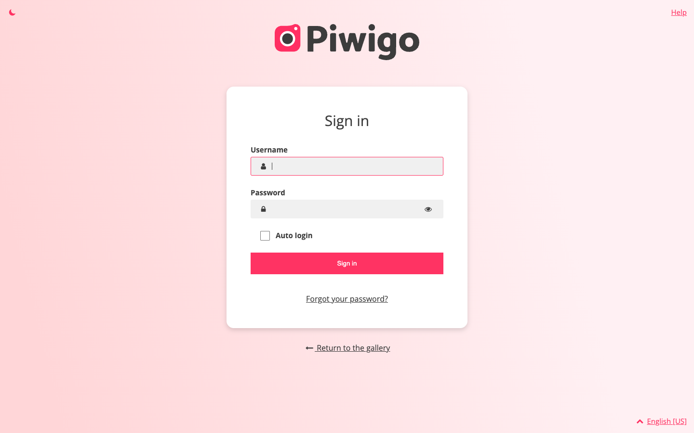
Sign-in: a branded full page (counter-example)
Piwigo · source · public · Taken: 2026-10-29 · PG-signin
Borrow: Shown as a contrast: gradient background, logo, icons in every field, a "forgot password" link. None of this applies to Google sign-in, and it is louder than the public site.
Fit: P7 conflicts: decoration that the public contact sheet does not have.
Borrow: Each picked file becomes a tile with its own remove control. The footer holds one filled "Upload N files" button, and the header has Cancel (discard the whole batch) and "+ Add more". This is the closest public match to our batch page.
Fit: P3 agrees: remove sits on each tile. P1 agrees: one filled action. P5 agrees: no errors on a fresh batch.
Borrow: Progress is a summary line ("0 of 2 files uploaded, 0 B of 5.4 MB") plus a ring on each tile. Captured with the upload endpoint blocked, so nothing was sent.
Fit: P3 agrees: progress is shown on each item. P7 neutral: the toast stack is busier than we need.
Borrow: Failure shows in two places: a "?" marker on each failed tile and a red summary bar, "Upload failed: 0 of 2 files uploaded", with Retry. Our version adds a reason and Restart/Delete on each item (FR-026), and confirm stays blocked until those are resolved.
Fit: P3 partly conflicts: Retry here is batch-wide, but we need per-item Restart and Delete. P2 agrees: the red is a thin bar, not a filled button.
Borrow: Upload is a dialog with one dashed drop area that states its limit before any file is picked ("up to 3 files" in the demo). Close is plain and Upload is the one filled action.
Fit: P6 agrees: the limit is shown up front. P1 agrees. P5 agrees: no errors when the dialog is empty.
Borrow: The modal says "Click here to select files... (or drag files to the page)": the whole page accepts a drop, not just a small target. Worth copying for a desktop-first admin.
Fit: P7 agrees. P6 not shown: no limits are stated before picking.
Borrow: One compact row per file: name, size, and on the right "Uploading 16%" with a cancel control. Fits a long batch better than Uppy's large tiles.
Fit: P3 agrees: cancel sits on the row. P7 agrees: dense and quiet.
Borrow: A plain grid of every photo with its title, date and camera underneath. The left icon rail is the whole admin shell. The grid is close to our public contact sheet, which supports reusing ContactSheet for the library (D-21).
Fit: P7 agrees. P3 agrees: title and facts sit inside each card. P4 not shown: no link to a public page.
Borrow: Selecting tints the card and ticks a corner circle, and a floating count bubble appears in the bottom-right corner. The selection is obvious and the grid does not move.
Fit: P7 agrees. P3 agrees: the select control is on the card.
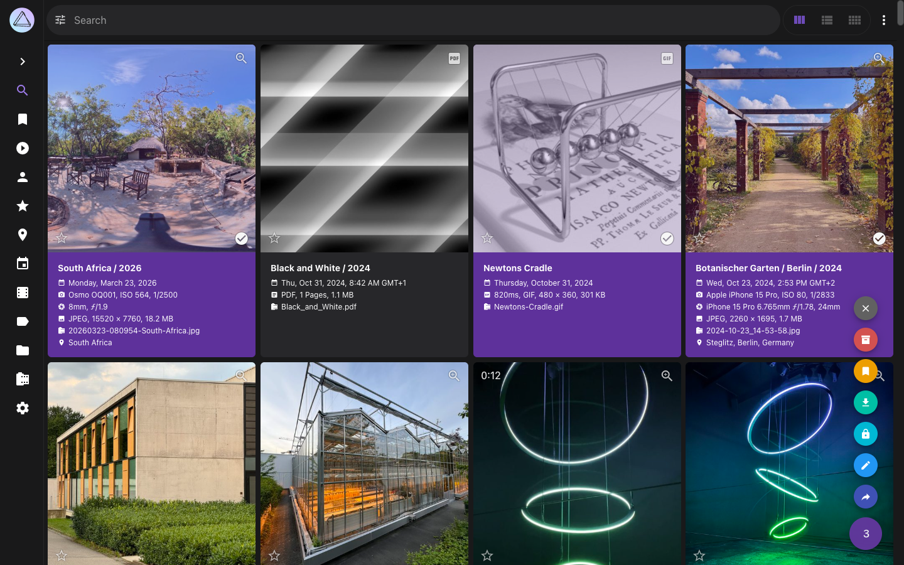
Library: many selected, actions open from the count
Borrow: With several selected, the count bubble expands into a short column of actions (add to album, delete, and others). Bulk actions only appear once there is a selection.
Fit: P5 agrees: nothing nags before you act. P2 neutral: the actions are icon-only.
Borrow: Clicking a title opens an editor beside the photo, with Title filled and Caption empty. It also shows date, place and camera fields we must NOT offer (metadata comes only from the server allowlist, III.7).
Fit: P3 agrees: you edit from the photo. P5 agrees: an empty caption is not flagged. Scope: keep only Title and Caption.
Borrow: A dense grid grouped under date headings, with a left nav of labelled sections and an Upload link top-right. Shown as the "photo manager" end of the range; our library has no date grouping.
Fit: P7 partly conflicts: about a dozen nav items, against the five we need.
Gallery list, home order, visibility PG-galleries
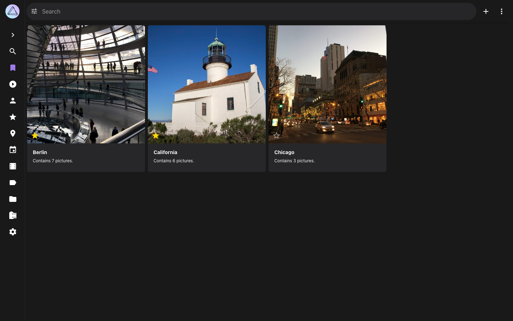
Gallery list: covers in a grid
PhotoPrism · source · public · Taken: 2026-10-29 · PG-galleries
Borrow: Albums are cover tiles with the title and count below: the same shape as our public home page. The admin list can be the home page plus controls.
Fit: P7 agrees. P4 not shown: no link to the public page.
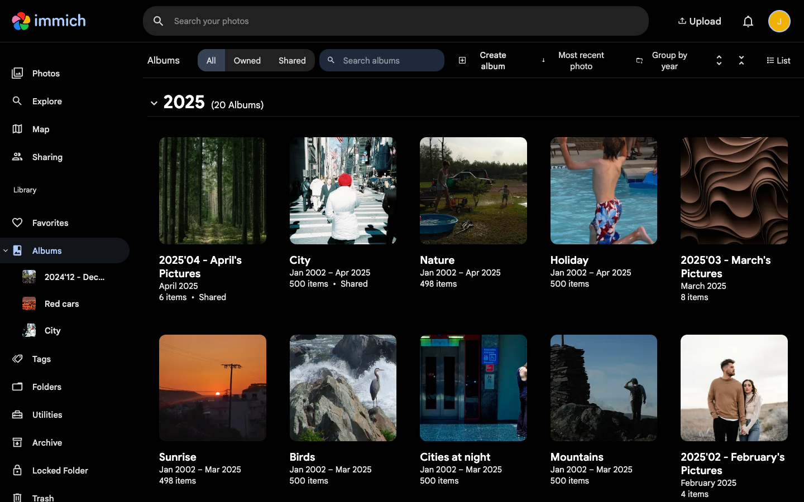
Gallery list: shared state as plain text on each card
Borrow: Each card carries its state in small grey text under the title ("4 items · Shared"), not as a coloured badge. Calm, and readable at a glance. "Create album" is a plain text button, not a filled one (researcher note corrected).
Fit: P7 agrees. P3 agrees: state sits on the card.
Borrow: Signed in, album covers get small corner badges: a green eye on the public album. The top grid holds "smart albums" that we do not have.
Fit: P7 agrees for the badge. Scope: the smart albums are outside our model.
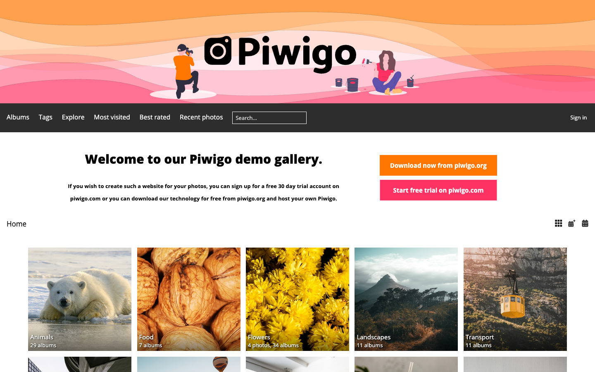
Gallery list: the public home as the admin's model (counter-example)
Piwigo · source · public · Taken: 2026-10-29 · PG-galleries
Borrow: Piwigo's public home is the listing its admin manages: a banner, a dense menu, and cards with counts. Shown as the opposite of our calm home page.
Borrow: Signed in, the album page is the public page plus an admin bar: Save, Download, Share and layout choices in the header. Editing happens on the real page, so the owner always sees the visitor view.
Fit: P4 agrees strongly: there is no separate admin copy of the page. P7 agrees.
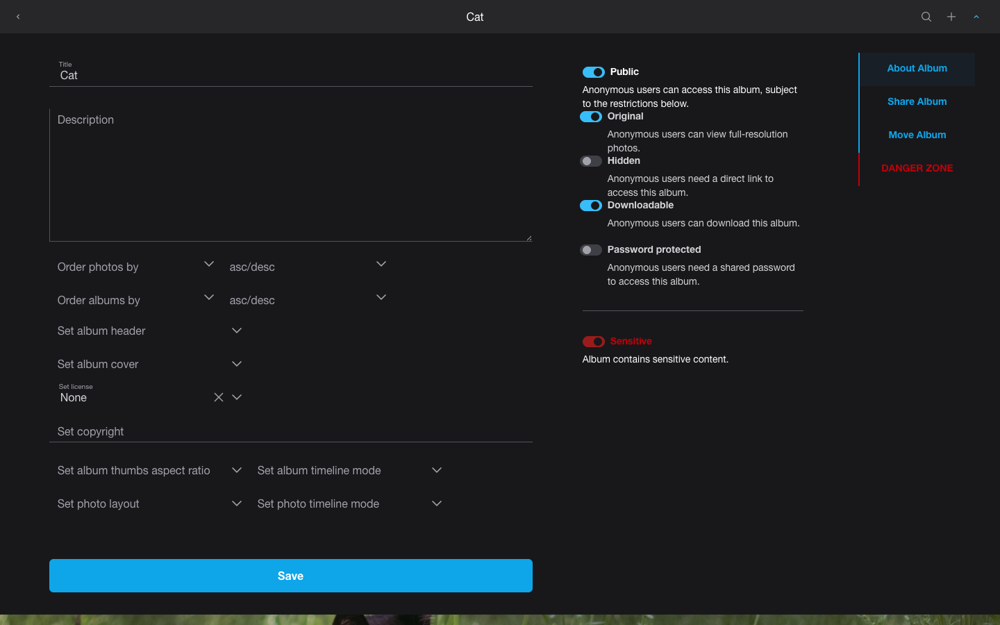
Builder: one panel for title, description, visibility, cover
Borrow: One panel holds Title (filled), Description (empty), a "Set album cover" choice, and a column of switches with one-line explanations: Public on, Hidden and Password off. A Danger Zone tab sits apart. About 15 settings, where we have 4.
Fit: P1 agrees: one filled Save. P7 partly conflicts: too many settings. Copy the structure (fields left, visibility right), not the count.
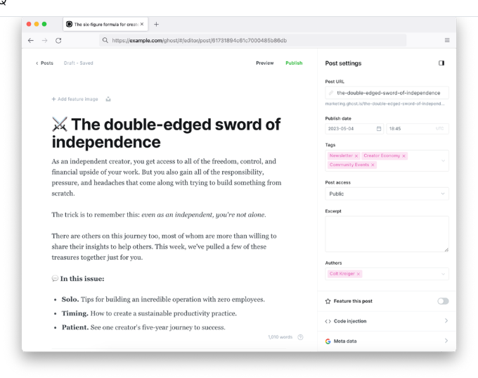
Builder: settings side panel, Preview beside Publish
Borrow: From Ghost's own help screenshot: the content stays in the main column and its settings sit in a right-hand panel. The top bar pairs "Preview" (see it as visitors will) with one Publish action.
Fit: P4 agrees: Preview links to the visitor view. P1 agrees: one filled action. P7 agrees.
Borrow: Choosing a cover switches the album into a "Select album cover" mode with a plain header bar. You click the photo you want. No dialog, no picker list.
Fit: P3 agrees: the action happens on the item itself. P7 agrees.
Borrow: Name (filled) and Description (empty) plus a Private checkbox, which is unchecked here, so the album is public. A plain checkbox is a quieter control than a switch.
Fit: P1 agrees: Save is the one filled action. P7 agrees.
Sign-in: no public example of a first-run "claim this site" screen or of the refusal shown to a non-owner. Every demo either signs you in or shows a normal login. These two screens need our own design.
References per admin component
Close-ups by component. Page screenshots above that also show a component state are listed under "also shown above" rather than repeated.
Button CP-button
Also shown above: Upload: a dialog with a dashed drop zone; Batch: queued items with one summary action; Builder: one panel for title, description, visibility, cover; Delete gallery: a separate danger zone with outlined red.
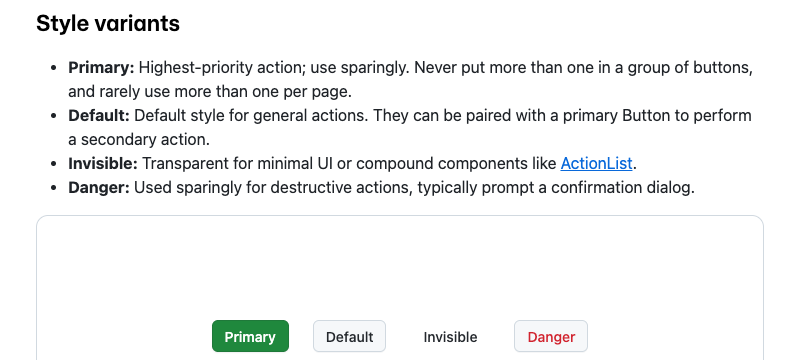
Button: four variants in one row, danger as red text
GitHub Primer · source · public · Taken: 2026-10-29 · CP-button:primary CP-button:secondary CP-button:danger
Borrow: Primary (filled), Default, Invisible and Danger. Danger is red text on the default grey button, not a red fill, until hovered.
Fit: P1 agrees. P2 agrees: danger is not solid at rest.
Button: primary next to secondary
GOV.UK Design System · source · public · Taken: 2026-10-29 · CP-button:primary CP-button:secondary
Borrow: A filled green primary beside a grey secondary of the same size: the "one filled action" rule as a pair.
Fit: P1 agrees.
Button: danger as solid red (counter-example)
GOV.UK Design System · source · public · Taken: 2026-10-29 · CP-button:danger
Borrow: GOV.UK's warning button is solid red. Shown to set aside: solid red shouts in a quiet UI.
Fit: P2 conflicts.
Button: disabled
GOV.UK Design System · source · public · Taken: 2026-10-29 · CP-button:disabled
Borrow: Disabled is the same button faded to half opacity. GOV.UK's own guidance says to avoid disabled buttons and explain why an action isn't available instead. That matches our "skip with a reason" preference.
Borrow: Geist puts a small spinner before the label ("Upload") and keeps the text, so the user still sees what is running.
Fit: P7 agrees.
Input CP-input
Also shown above: Library: editing title and caption; Builder: one panel for title, description, visibility, cover; Builder: a small edit dialog with a Private checkbox.
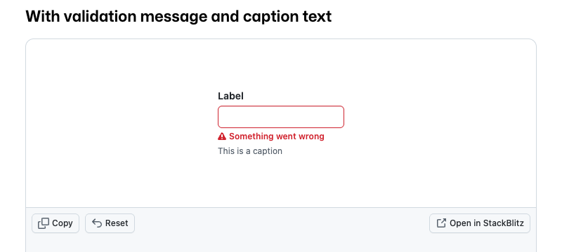
Input: an error message under the field
GitHub Primer · source · public · Taken: 2026-10-29 · CP-input:too-long
Borrow: The field turns red and one short message appears below it, above a grey caption. Use this for a title over 200 characters: say the limit, don't just turn it red.
Fit: P5 agrees: the message only appears after input.
Borrow: A red border plus one line of red text with an icon. The message is short and sits under the field.
Fit: P5 agrees. P7 agrees.
Gap, CP-input:saving: no example of a field showing "saving…" in place (Geist, Atlassian, Primer checked).
Gap, CP-input:saved: no example of a field showing "saved" in place (same sources).
Upload drop zone CP-dropzone
Also shown above: Upload: a dialog with a dashed drop zone; Upload: drop anywhere on the page.
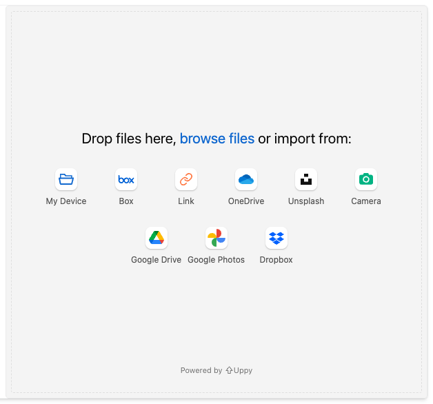
Drop zone: idle
Uppy · source · public · Taken: 2026-10-29 · CP-dropzone:idle
Borrow: One sentence, "Drop files here, browse files or import from", over a row of source icons. We only need the sentence and the browse link.
Fit: P7 partly conflicts: the cloud-source icons are noise for us.
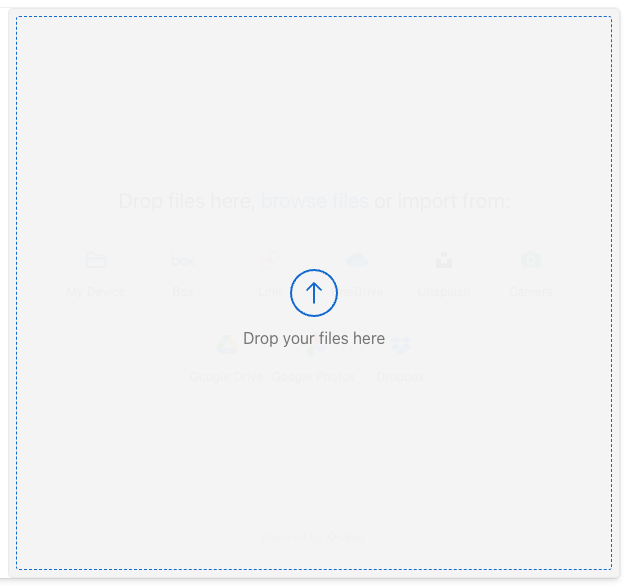
Drop zone: drag-over
Uppy · source · public · Taken: 2026-10-29 · CP-dropzone:drag-over
Borrow: While a file is held over it, the whole panel turns to a dashed outline with "Drop your files here" and nothing else.
Fit: P7 agrees.
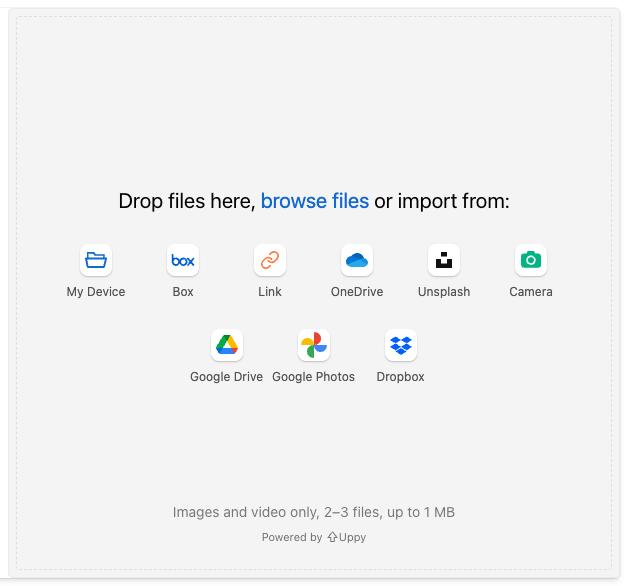
Drop zone: refused when picked, with the reason
Uppy · source · public · Taken: 2026-10-29 · CP-dropzone:refused
Borrow: With limits on, the limit is printed in the zone ("Images and video only, 2-3 files, up to 1 MB"). A bad file is refused the moment it is picked, with "scan.tiff exceeds maximum allowed size" naming the file and the reason.
Fit: P6 agrees strongly: limits are shown before picking and enforced on pick.
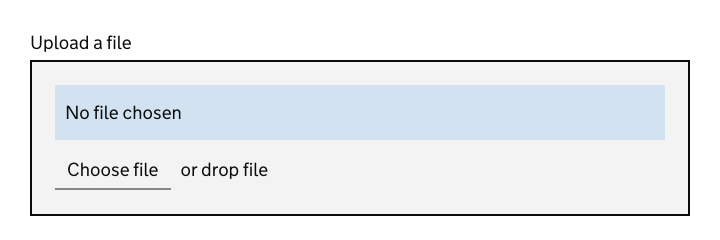
Drop zone: a server-rendered upload input, enhanced
GOV.UK Design System · source · public · Taken: 2026-10-29 · CP-dropzone:drag-over CP-dropzone:idle
Borrow: GOV.UK's enhanced file input is a normal file field that becomes a drop target when scripts run (shown mid drag-over). It still works without scripts, which suits our server-rendered admin.
Fit: P7 agrees. Fits D-21: progressive enhancement over a real form field.
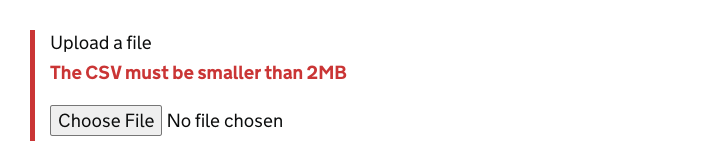
Drop zone: refusal message
GOV.UK Design System · source · public · Taken: 2026-10-29 · CP-dropzone:refused
Borrow: A red rule and one plain sentence above the field ("The CSV must be smaller than 2MB"). This is the wording model for "Only JPEG files up to 20 MB".
Fit: P6 agrees. P5 agrees.
Upload batch item CP-batchitem
Also shown above: Batch: queued items with one summary action; Batch: in progress, totals in the footer; Batch: failed, with a summary Retry; Batch item: one bar per file.
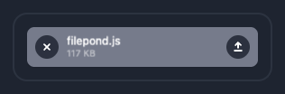
Batch item: queued
FilePond · source · public · Taken: 2026-10-29 · CP-batchitem:queued
Borrow: A grey row with the name and size, remove on the left, upload on the right. Two controls, both inside the row.
Fit: P3 agrees.
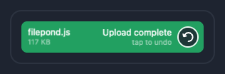
Batch item: succeeded
FilePond · source · public · Taken: 2026-10-29 · CP-batchitem:succeeded
Borrow: The row turns green and says "Upload complete". Clear, but a whole green row is loud across a 50-image batch. A green tick would be enough.
Fit: P7 partly conflicts.
Gap, CP-batchitem:processing: no public example of a per-file "preparing in the browser" step before upload (Uppy, FilePond checked); ours is unique to client-side derivatives.
Gap, CP-batchitem:interrupted: no example of an item that stopped with no result and offers Restart/Delete (Uppy, FilePond checked).
Batch summary CP-batchsummary
Also shown above: Batch: queued items with one summary action; Batch: in progress, totals in the footer; Batch: failed, with a summary Retry.
Borrow: A single thin bar with no label. That is enough for overall batch progress next to a "12 of 40" count.
Fit: P7 agrees.
Library grid with selection CP-selectgrid
Also shown above: Library: photo grid with facts under each photo; Library: one photo selected; Library: many selected, actions open from the count.
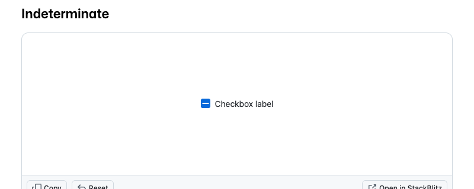
Selection: the "some selected" checkbox
GitHub Primer · source · public · Taken: 2026-10-29 · CP-selectgrid:many
Borrow: The mixed-state checkbox to put above the library grid: unticked, ticked, or a dash when only some are selected.
Fit: P7 agrees.
Reorder list or grid CP-reorder
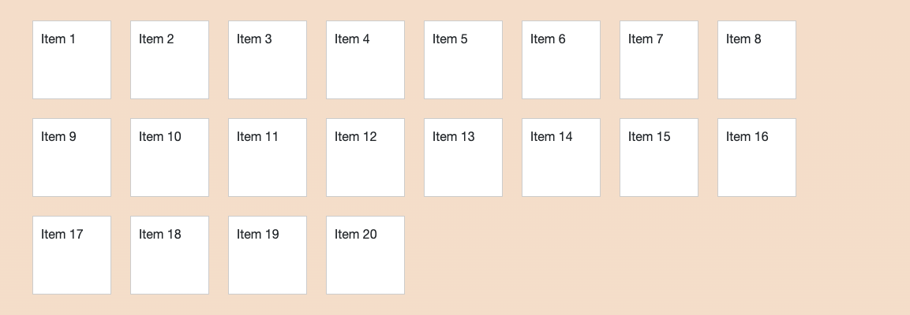
Reorder: grid at rest
SortableJS · source · public · Taken: 2026-10-29 · CP-reorder:rest
Borrow: A grid of equal tiles in a fixed order: the gallery builder and home order are grids, not lists.
Fit: P7 agrees.
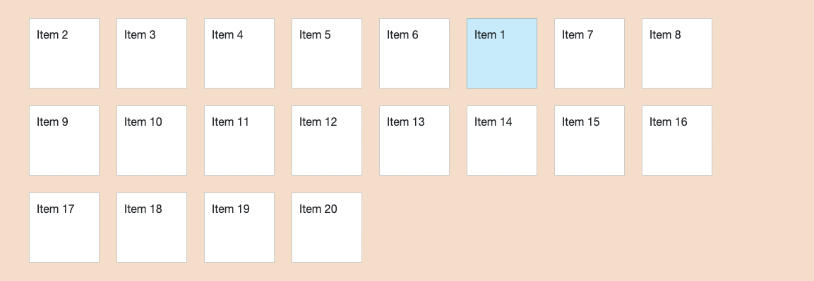
Reorder: grid mid-drag
SortableJS · source · public · Taken: 2026-10-29 · CP-reorder:dragging
Borrow: While dragging, the drop slot shows as a pale blue tile and the other tiles shift around it. Where it will land is always visible.
Fit: P7 agrees.
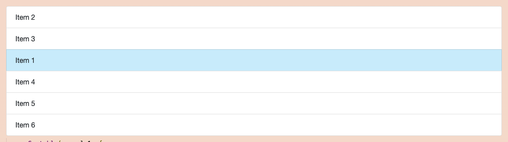
Reorder: list mid-drag
SortableJS · source · public · Taken: 2026-10-29 · CP-reorder:dragging
Borrow: The same ghost-slot idea in a single column. Suits a home-order list of gallery titles.
Fit: P7 agrees.
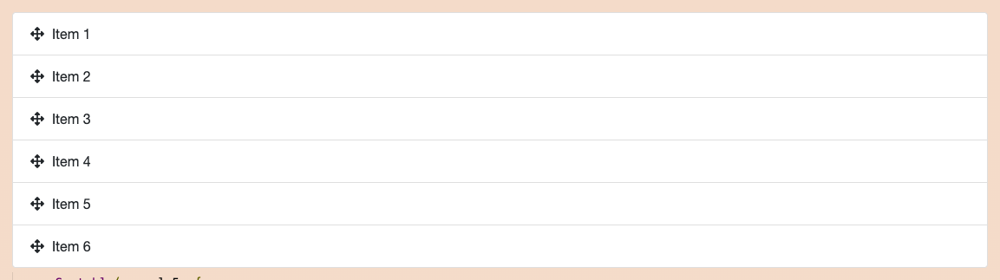
Reorder: a drag handle on each row
SortableJS · source · public · Taken: 2026-10-29 · CP-reorder:rest
Borrow: A ☰ handle at the left of each row: only the handle drags, so clicks on the rest of the row still work (open, rename).
Fit: P3 agrees: the handle is inside the item.
Gap, CP-reorder:keyboard: no demo shows keyboard reordering (SortableJS checked); this needs its own design.
Visibility switch CP-visibility
Also shown above: Gallery list: small badges for state; Builder: one panel for title, description, visibility, cover; Builder: a small edit dialog with a Private checkbox.
Borrow: Small switches with the label on the left. On is filled, off is grey. One switch per gallery, labelled "Public", reads plainly.
Fit: P7 agrees.
Visibility: the shape of a warning before publishing
GOV.UK Design System · source · public · Taken: 2026-10-29 · CP-visibility
Borrow: An "!" mark and one bold sentence. This is the pattern to adapt for the publish warning ("This gallery and its photos will be visible to anyone"). No product example of that warning was found (see gaps).
Fit: P5 agrees: one sentence at the moment it matters.
Gap, CP-visibility:publish-warning: no product shows a warning before making a gallery public (Atlassian, Geist, GOV.UK, Lychee, Immich checked); GOV.UK warning text is the pattern to adapt.
Cover marker CP-cover
Also shown above: Builder: choosing a cover in place; Builder: album menu with "Select album cover"; Builder: one panel for title, description, visibility, cover.
Gap, CP-cover:pinned: no captured screen marks which photo is the current cover (Immich and Lychee checked; both pick a cover but don't mark it in the grid).
Destructive confirmation CP-confirm
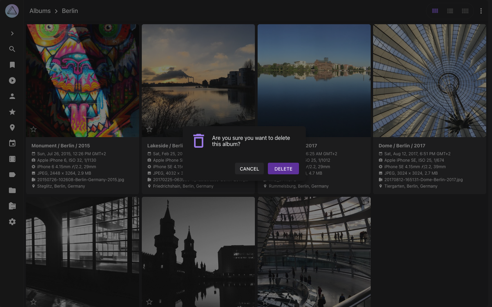
Delete gallery: a vague confirm (counter-example)
PhotoPrism · source · public · Taken: 2026-10-29 · CP-confirm:delete-gallery
Borrow: "Are you sure you want to delete this album?" with a filled purple DELETE. It doesn't name the album or say what happens to the photos, and the destructive action is the loudest thing on screen. Cancelled, nothing deleted.
Fit: P2 conflicts: danger is the filled primary.
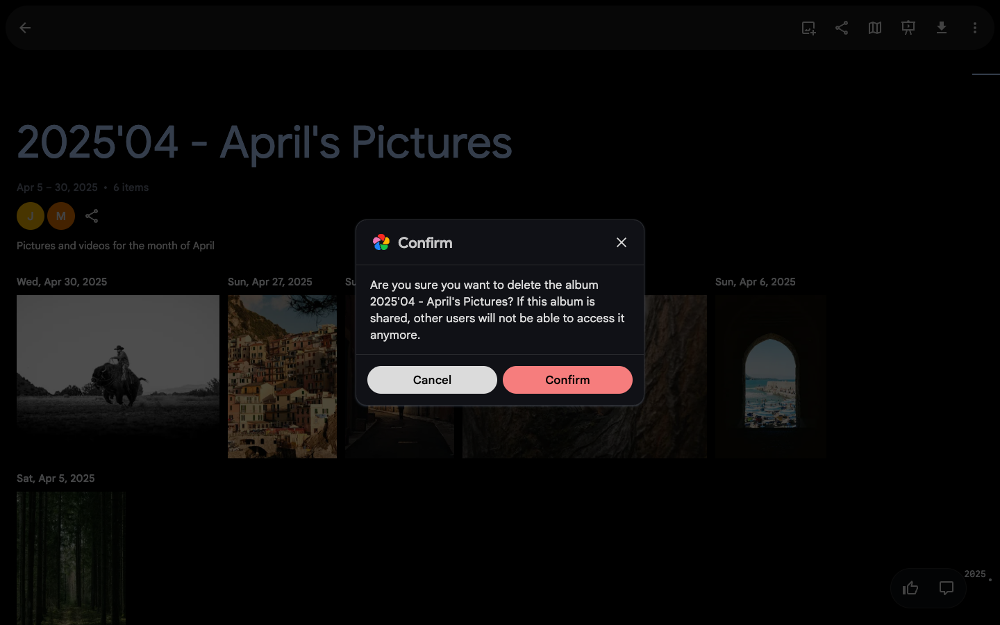
Delete gallery: names the album and the consequence
Borrow: The dialog names the album and says what changes for others. For us: "Delete Summer 2024? The photos stay in your library." Confirm is pink-filled. Cancelled, nothing deleted.
Fit: P2 partly conflicts: filled confirm. The wording is the part to borrow.
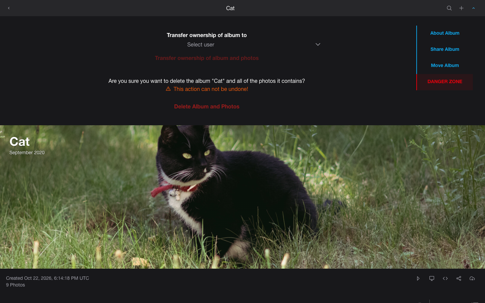
Delete gallery: a separate danger zone with outlined red
Borrow: Delete lives on its own tab, away from everyday settings. It is red text with no fill, it names the album, and it says plainly that it can't be undone. Closest to our preferences.
Fit: P2 agrees strongly. P3 agrees: it sits inside the album's own panel.
Borrow: For irreversible deletes the button stays off until the name is typed. Probably too heavy for one image, but it fits deleting a large gallery.
Fit: P2 agrees. P7 neutral: it adds a step.
Gap, CP-confirm:delete-image: no image-delete confirmation was captured; the gallery-delete dialogs above are the pattern.
Admin shell CP-shell
Also shown above: Library: photo grid with facts under each photo; Library: date-grouped timeline; Gallery list: shared state as plain text on each card; Builder: settings side panel, Preview beside Publish.
Borrow: From Ghost's help: the site itself fills the left, and admin is a narrow column on the right. Admin is a frame around the real site, not a separate dashboard.
Checked for buttons, toggle, progress and danger modal. Its danger buttons are solid red (P2), and Geist and Primer showed the same states more quietly, so it added nothing.
wp-admin runs inside nested cross-origin frames in the playground shell, so it could not be captured cleanly. Its admin is the dense, chrome-heavy model we are avoiding (P7).
P1–P7 are the owner's stated admin preferences: one filled primary action (P1), danger in red text with no fill (P2), controls inside the item (P3), a link to the public page (P4), no validation nags on working screens (P5), limits enforced when files are picked (P6), and calm chrome like the public contact sheet (P7). Roman-numeral ids are constitution rules.
Pattern
Seen on
Fit
Limits shown before picking; a bad file refused on pick, naming the file and the reason
Uppy, PhotoPrism, GOV.UK
Fits. P6 and P5. Matches the 20 MB JPEG-only rule (feature 001 FR-014).
One filled batch action in a footer; per-file controls on each item
Uppy, FilePond
Fits. P1 and P3. Needs per-item Restart and Delete on failed or interrupted items, which no example shows.
Bulk actions appear only after a selection, opened from a count
PhotoPrism, Primer (mixed-state checkbox)
Fits. P5: nothing to act on, nothing shown.
Admin is the public page plus a thin owner layer (a header bar, a side panel), not a separate dashboard
Lychee, Ghost
Fits. P4 and P7. Reuses ContactSheet as D-21 plans. Owner views already bypass the edge cache (IV.18).
Cover chosen by clicking the photo in a "select cover" mode, not from a dropdown
Immich (Lychee uses a dropdown)
Fits. P3. No example marks which photo is currently the cover (gap).
Delete kept apart, named, and in red text with no fill
Lychee (PhotoPrism, Immich, GOV.UK, Atlassian use solid fills)
Fits P2 only in Lychee. Of the deletes captured, only Lychee's fits the owner's P2 rule.
Reorder by dragging, with a ghost slot (a pale placeholder showing where the item will land) and a handle inside each item
SortableJS, Immich (album order)
Fits. P3. Admin may need scripts (V.3). Keyboard reorder has no example and needs design.
Visibility as quiet text or a small badge on each card ("Shared", a small eye icon)
Immich, Lychee
Fits. P7. Implements II.2 public and private at a glance.
Progressive enhancement (a plain file field that scripts upgrade into a drop target)
GOV.UK
Fits D-21 (server-rendered with htmx and web components). Not required for admin (V.3), but cheap.
Editing date, place and camera fields on a photo
PhotoPrism, Lychee
Does not fit. Camera metadata comes only from the server allowlist (III.7), and title and caption are the only owner text (feature 001 FR-009). Set aside.
Directions to choose from
A. Site with a frame Recommended
Admin is the public site itself, with a thin owner layer on top: a slim bar and a right-hand panel. You manage galleries by looking at them.
Sign-in: A single "Sign in with Google" card over the home page's first cover photo (or the claim message on an unclaimed site). A refused visitor gets the same card with one sentence saying why.
Batch: The whole page is a drop target with the limits stated. Incoming photos fill a contact-sheet grid, each tile carrying its own state and Restart/Delete. A footer holds the count and the one Confirm action.
Library: The same contact sheet as the public pages, with every photo. A select circle on hover, bulk actions from a count, and title/caption editing in a side panel.
Galleries: The home page as visitors see it, plus private galleries dimmed. Each card has a drag handle, a "Public" switch and a View link.
Builder: The gallery page as visitors see it, with drag reordering in the grid, "make cover" on each tile, and a right panel for title, description, Public, and a separate danger area for delete.
Relation to the public site: It is the public contact sheet with controls added, so one grid component serves both (D-20, D-21).
Cost: low to medium. htmx swaps on existing components. Drag reorder and the drop zone are the two web components.
B. Workbench
A separate, quiet admin app: a narrow left icon rail, then grids and dialogs, like a photo manager.
From: PhotoPrism, Immich
Sign-in: A centred card on an empty page.
Batch: An upload dialog over the library, then a batch page with a list of rows (FilePond-style) and a status footer.
Library: A dense library grid with facts under each photo, a selection count bubble, and an edit dialog.
Galleries: A grid of album covers with a state line under each, and a ⋮ menu per album.
Builder: An album page with the title large over the grid. Actions live in a ⋮ menu, and the cover is chosen in a select mode.
Relation to the public site: It looks different from the public site: denser, with its own chrome. Only the photo grid is shared.
Cost: medium. Needs its own shell and layout, and more admin-only components to keep consistent.
C. Plain forms
Admin as ordinary server-rendered pages: lists, forms and buttons that work without scripts, with drag-and-drop only as an extra.
From: GOV.UK, Primer
Sign-in: A plain page with a heading, one sentence and one button.
Batch: A file field upgraded into a drop zone, then a table of files with a status column and per-row Restart/Delete. Confirm sits at the bottom.
Library: A table or small-thumbnail list with checkboxes, a title column and inline edit links.
Galleries: A list of gallery titles with Public/Private text, Move up/down buttons and Edit links.
Builder: A form for title and description, a Public checkbox, and a list of photos with Move up/down and "Make cover" buttons.
Relation to the public site: It is deliberately unlike the public site: text-first, so photos are small. The two sides share only typography.
Cost: lowest, mostly forms. But ordering 40 photos with up/down buttons is slow.
Recommendation: A, Site with a frame. It is the only direction where every managed item already is its public page (P4), so "view as visitor" needs no extra link. It reuses the ContactSheet the public site already has, as D-21 planned, so the admin needs the fewest new components. It also keeps the admin as calm as the public site (P7). Directions can be mixed: A's layout with C's plain file field as the fallback is the cheapest safe version.